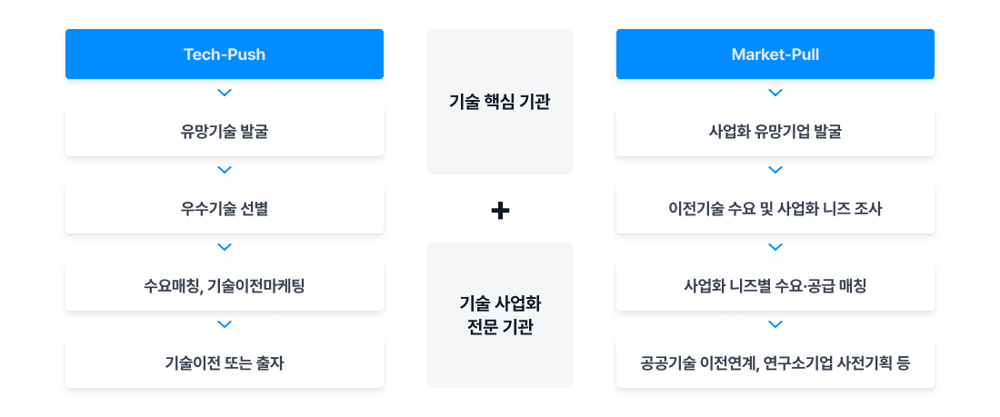
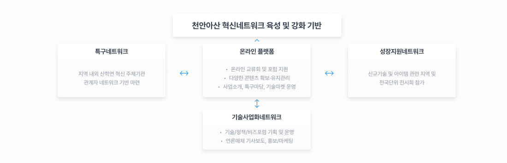
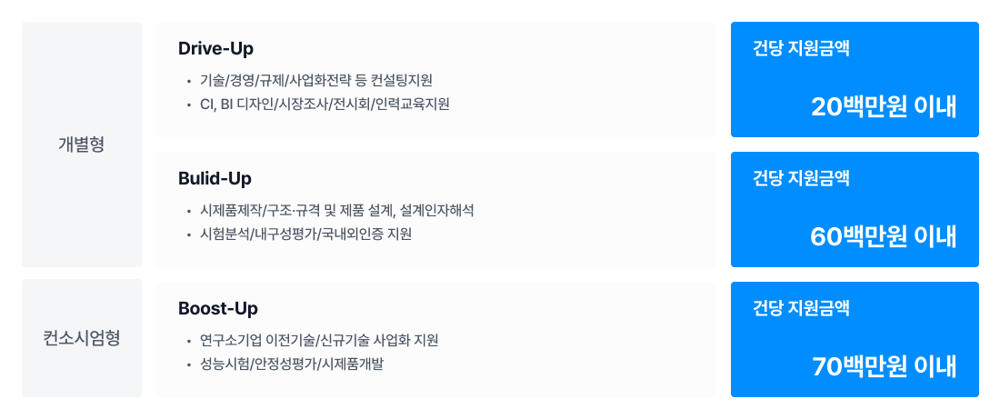
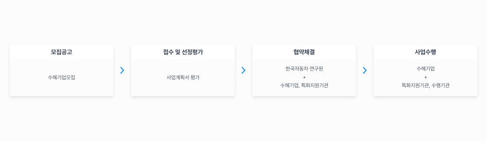

공공연구기관의 기술을 직접 사업화하기
위해
수요기술을 발굴하고 분석하여 기술이전 또는
출자로
연구소 기업을 설립하고 이를 통한 공공기술
사업화 성과 창출
사업개요
사업내용
충남 천안아산 강소연구개발특구는 차세대
자동차 부품의 혁신 클러스트 특구로
아산탕정 천안불당 개발지구와 천안풍세일반산업단지, 한국자동차연구원으로 구성되어 있습니다.
아산탕정 천안불당 개발지구와 천안풍세일반산업단지, 한국자동차연구원으로 구성되어 있습니다.
지원 대상
신사업, 업종 전환 및 개편 등이 필요한
기업으로서, 기술이전 수요가 있으며,
연구소기업 추진이 가능한 기업 또는 예비
창업자
사업추진 절차

주요혜택
원천기술 확보
신규사업을 위한 기술개발에 소요되는
시간과 비용을 절감
투자유치
기술핵심기관 조성 펀드 투자 연계
검토
후속과제 지원
특구 후속지원사업 (시제품제작,
시험인증, 컨설팅 등) 신청시 가점
부여
입주공간 지원
천안 : 한국자동차연구원 내 충남TP
자동차 R&D 센터 풍세 일반산업단지
아산 : 강소특구 창업보육 제 1 캠퍼스
아산 : 강소특구 창업보육 제 1 캠퍼스
공공연구기관의 기술을 직접 사업화하기 위한
목적으로 설립
연구소기업 설립요건
근거규정
연구개발특구의 육성에 관한 특별법 제
9조의3, 시행령 제 13조
설립 지역
신사업, 업종 전환 및 개편 등이 필요한
기업으로서, 기술이전 수요가 있으며,
연구소기업 추진이 가능한 기업 또는 예비
창업자
설립 주체
· 공공연구기관
· 산학연협력기술지주회사
· 신기술창업전문회사(공공연구기관 주식 50%↑)
· 공공연구기관첨단기술지주회사
· 산학연협력기술지주회사
· 신기술창업전문회사(공공연구기관 주식 50%↑)
· 공공연구기관첨단기술지주회사
주식보유비율
· 설립기관이 연구소기업 지분을 10% 이상
보유
· 연구개발특구의 육성에 관한 특별법
제9조의3(‘21.6.23. 개정)
연구소기업 설립 절차


연구소기업 설립 유형


연구소기업 세제 혜택
국세
법인세: 3년간 100%, 이후 2년간 50%감면
지방세
취･등록세: 면제
재산세: 최대 7년간 100%, 이후 3년간 50% 감면
재산세: 최대 7년간 100%, 이후 3년간 50% 감면
첨단기술분야에서 일정한 생산능력과
연구개발능력을 보유한 기업에 대해
세제지원 등으로 특구내 첨단기술분야의 유망기업 육성
세제지원 등으로 특구내 첨단기술분야의 유망기업 육성
첨단기술기업 개요
근거 법령
연구개발특구의 육성에 관한 특별법 제9조, 시행령 제12조의3
대상 기업
·강소특구내에 입주한 기업 중 기술집약도가
높고 기술혁신속도가 빠른 기술분야의
제품을 생산 판매하는 기업
·첨단기술 분야의 국내·외
특허권(전용실시권 포함) 보유 및 이를
활용하여 제품을 생산·판매할 것
·‘산업발전법’ 제5조에 따라
산업통상자원부장관이 고시한 첨단기술
분야
첨단기술기업 지정 요건
특구입주
특구 내 입주 절차가 완료된 기업
첨단기술제품 생산 및 판매
[산업발전법]에 따라 고시된 첨단기술 및
제품에 대한 특허권을 보유, 이를 활용한
제품을 생산·판매하는 기업
매출액
신청일 직전 4분기의 총 매출액 중:
첨단기술을 활용하여 발생한 매출액 비율이
20% 이상
연구개발비
신청일 직전 4분기의 총 매출액 중:
연구개발비 비율이 3~5% 이상
첨단기술기업 신청 절차


첨단기술기업 지정 절차
지정 신청서, 특허 및 첨단제품 명세서 및 매출
명세서, 매출액 대비 연구개발비 명세서,
법인등기부등본 및 사업자등록증, 기업부설연구소 인정서, 첨단기술 제품 확인 신청서
법인등기부등본 및 사업자등록증, 기업부설연구소 인정서, 첨단기술 제품 확인 신청서
* 첨단기술기업 유효기간은 지정받은 날로부터
2년 이며, 만료 전 재지정 신청을 해야함
첨단기술기업 세제 혜택
국세
법인세: 3년간 100%, 이후 2년간 50%감면
지방세
취･등록세: 면제
재산세: 최대 7년간 100%, 이후 3년간 50% 감면
재산세: 최대 7년간 100%, 이후 3년간 50% 감면
지역 내 예비·초기 창업자를 모집하여
창업아이템 발굴·검증, 멘토링, 투자연계 등
창업 역량강화를 통한 기술창업 활성화
사업개요
모집대상
창업 아이디어를 보유한 예비창업자 또는
업력 3년 미만의 초기창업자
모집분야
신사업, 업종 전환 및 개편 등이 필요한
기업으로서, 기술이전 수요가 있으며,
연구소기업 추진이 가능한 기업 또는 예비
창업자
선정규모
매년 30개社 내외 (천안·아산 지역내
사업자등록 필요)
접수시기
매년 4~5월경(운영일정에 따라 변경 가능)
사업추진 절차
1
모집 공고 및 접수
대상: 예비·초기 창업자
2
1차 선정
30개社 내외 선발
3
창업 코디 네이터 상담
기업 현황 진단
4
기본과정
역량강화 교육
5
2차 선정
서면/대면 평가
6
심화과정
실전교육, IR Camp등
7
2차 선정
서면/대면 평가
8
후속연계 지원
Demoday 개최
주요혜택
창업교육
기본역량강화 교육 및 실전 심화교육,
세미나 등
창업코칭
분야별 전문가 연계로 맞춤형 멘토링을
통한 아이템 검증
자금지원
사업화지원금 지원(기업당 최대
15백만원)
투자지원
Seed투자 및 벤처투자펀드 연계(기업당
최대 5억원)
후속지원
제휴기관 지원사업, 보육 인프라 연계
등 네트워크 및 후속성장 지원
충남천안아산강소특구 활성화를 위해 지역내
혁신네트워크를 조성해 구성원 간 협력체계
구축 및 이를 기반으로 한 충남 천안·아산
기술사업화 생태계 조성
사업내용
네트워크를 통해 주요 구성원 간 협력체계 구축
및 이를 기반으로 한 충남 천안·아산
기술사업화 생태계 조성
주요내용
특구네트워크
특구 운영 방향성 논의 및 인프라
구축 등 협의 진행
행정협의회
실무협의회
운영협의회
기술사업화네트워크
특화분야에 대한 기술교류,
기술사업화 촉진, 기술 애로사항
발굴 및
특구사업 개선 등을 위한 기업 및 기관 간의 네트워크 운영
특구사업 개선 등을 위한 기업 및 기관 간의 네트워크 운영
기술포럼
정책포럼
비즈포럼
특구네트워크
창업기업 및 연구소기업이 보유한
기술 및 아이템의 판로개척 지원을
위해
지역 또는 전국단위 전시회, 주요 언론매체를 통한 홍보 및 마케팅 활동
지역 또는 전국단위 전시회, 주요 언론매체를 통한 홍보 및 마케팅 활동
판로개척 지원
네트워크 구축 운영
핵심네트워크 추진 전략

주요혜택
· 산·학·연·관 협력체계 구축 및 운영
· 기술사업화 포럼을 통한 정보 공유
· 신규 R&D 기획 및 사업구상
· 지역혁신기관 기업지원 사업 연계 지원
천안·아산 지역 소재 기업의 제품(기술) 사업화
지원을 통한 ‘ 충남 천안·아산
강소연구개발특구(차세대 자동차 부품
혁신클러스터)’ 육성 및 지역경제 발전 이바지
지원내용
충남 천안·아산 강소연구개발특구
특화분야(차세대 자동차 부품)의
기술혁신과
경쟁력 제고에 필요한 컨설팅 및 기술개발 전반에 걸친 패키지 지원
경쟁력 제고에 필요한 컨설팅 및 기술개발 전반에 걸친 패키지 지원
지원대상
개별형
천안·아산 지역 중소·중견기업
컨소시엄형
강소특구 소재 연구소기업
세부지원프로그램

지원기간
개별형
3개월 이내
컨소시엄형
6개월 이내
* 매년 5~6월 공고
추진절차

